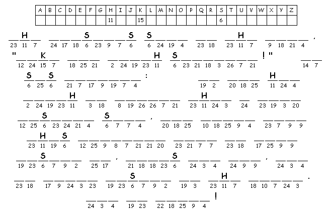

This Week:
Lamentations
1:1-6 and [Lamentations
3:19-26 or Psalm
137] or Habakkuk
1:1-4; 2:1-4 and Psalm
37:1-9,
2
Timothy 1:1-14, Luke
17:5-10
Elementary School Pew-work

|
1.
How big is a mustard seed?
2.
How does our faith germinate and grow?
|
Next week: Jeremiah 29:1, 4-7 and Psalm 66:1-12 or 2 Kings 5:1-3, 7-15c and Psalm 111, 2 Timothy 2:8-15, Luke 17:11-19